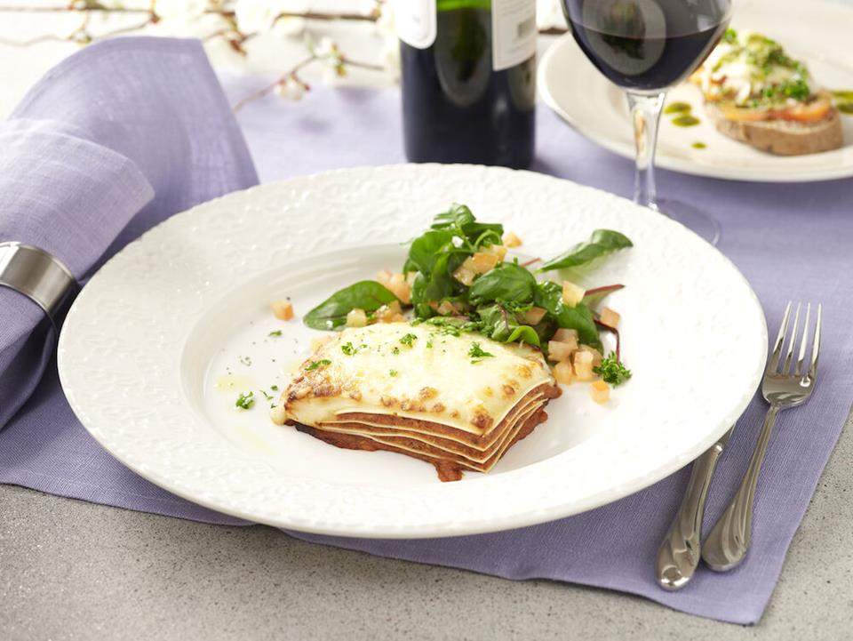

Lasagna

Description
Lasagna is a tasty meal that's easy to make.
You find all you need to know in the step by step guid below
Ingredients
- 2 Onions
- 2 Cloves of garlic
- 500 g Ground beef
- 1 Tbsp Oil
- 4 Tbsp Tomato paste
- 500 g
Crushed tomatoes
- 8 Lasagna plates
Sauce
- 6 Tbsp Butter
- 6 Tbsp Flour
- 10 Dl Milk
- 2 Dl parmesan
Steps
- Turn on the oven on 175°C
- Dice the onions. cook the onions in the Oil
in a frying.
Add Tomato paste and the ground meat
fry for a couple minutes and add
the crushed tomato's let it
cook for 10 minutes
- Sauce: Melt butter and stir in the flour. Dilute with the milk while whisking.
Let the sauce boil for about 5 minutes. Season with salt and pepper.
-
Alternate the sauce, lasagne plates and the minced meat sauce in an oven-safe
form (approx. 20 x 30 cm). Finish with sauce and parmesan cheese.
-
Put the lasagna in the middle of the oven for about 40 minutes.
-
To serve: Serve the lasagna with salad.